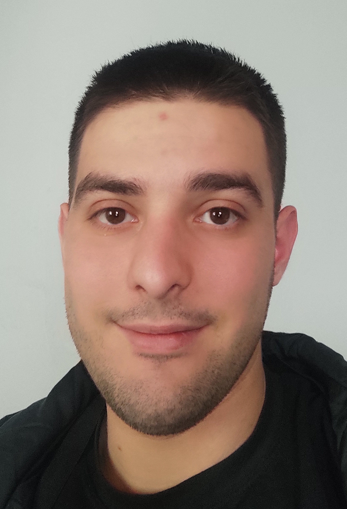

Dimitris Papazafeiris

Summary
A self-motivated, software engineer graduate with passion for technology and a mission to evolve as an expert.
Education
-
Bachelor of Science, Software Engineering - University of Peloponnese (2015-2021)
Work Experience
Skills
- HTML:⭐️⭐️⭐️⭐️
- CSS:⭐️⭐️⭐️⭐️
- Javascript:⭐️⭐️⭐️
- C/C#:⭐️⭐️⭐️
- Python:⭐️⭐️
- Adobe Premiere:⭐️⭐️
- SQL:⭐️⭐️⭐️
- Critical Thinking:⭐️⭐️⭐️⭐️
- Problem Solving Skills:⭐️⭐️⭐️⭐️
- Good Attitude:⭐️⭐️⭐️⭐️
- Teamwork:⭐️⭐️⭐️
Certificates
- Professional Skills Development in Europe (08/2014 - 09/2014)
Hobbies
Contact